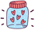
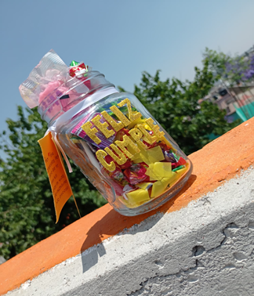

PRODUCTOS QUE REALIZAMOS
En Gift Shop realizamos los frasco de dulces bajo un diseño especifico que selecciona cada uno de nuestros clientes con el objetivo de cumplir sus espectativas y hacer un regalo único y especial para su destinatario.
Esto no evita que contemos con modelos "bases" para que el cliente pueda modificar y hacer los cambios sobre ellos para llenar sus expectativas. Entre ellos contamos con los siguientes modelos de productos finalizados:
1. MODELO PARA CUMPLEAÑOS
El primer modelo fue realizado con nuestro primer modelo de frasco, este es de vidrio y cuenta con una asa para sujetarlo. El objetivo que tiene este frasco es desearle un feliz cumpleaños a quien lo reciba, por eso tratamos de que tenga un diseño un poco más llamativo con el fomi de diamantina y los pequeños pedazos de papel china que se exparcen al sacar su contenido. El cual es acompañado de una nota con un mensaje especial y con amor para el cumpleañero.
Su costo es de 65 pesos (este se mantiene aun si nuestro cliente desea agregar algún detalle extra)

2. MODELO PARA UN DÍA ESPECIAL
El siguiente modelo tiene un diseño especial, ya que este es realizado con el fin de alegrar el dia del destinatario; en el caso de este frasco se realizo con el objetivo de ser un regalo para el nieto de nuestra clienta quien queria hacerlo feliz con un detalle inesperado. Este fue personalizado con fomi y papel china de color azul, asi como se le agrego un muñeco de fomi y dulces extras en conjunto de una nota expresando un lindo mensaje; cumpliendo así con las caracteristicas que solicitaba nuestra clienta.
El precio de este frasco al ser de mayor tamaño y con más detalles en el es de 75$
Este modelo de frasco fue realizado para una tan ocasión especial como lo es el día de las madres. Nuestro cliente queria hacer un lindo detalle para su mami por lo que nos dio el siguiente modelo, el cual consta de un mensaje colocado en el frasco con fomi color blanco, decorado con papel china de color rosa y un listón que ata una nota escrita previamente por nuestro cliente y a su vez sostiene un dulce en forma de corazón.
Este diseño de frasco puede ser modificado por el/la cliente, a su vez puede agregar detalles extra con un precio de $80.
Este último modelo fue diseñado con la tematica para un Baby Shower de un niño, por ello se trabajo con fomi de color blanco y azul, con los que se realizaron figuras que decoraran el frasco por la parte superior de este con ayuda de palitos de bandera para que pudieran sobresalir y mantenerse; se agrego papel de china de color azul en el fondo y blanco en la parte superior cuando este fue rellenado con dulces. Para finalizar se escribió el nombre del bebé en camino y se ato en la boca del frasco una nota con la fecha en que se festejo el evento.
Este modelo tiene un costo de $90, aunque puede hacerse un porcentaje de descuento dependiendo de las piezas que se soliciten